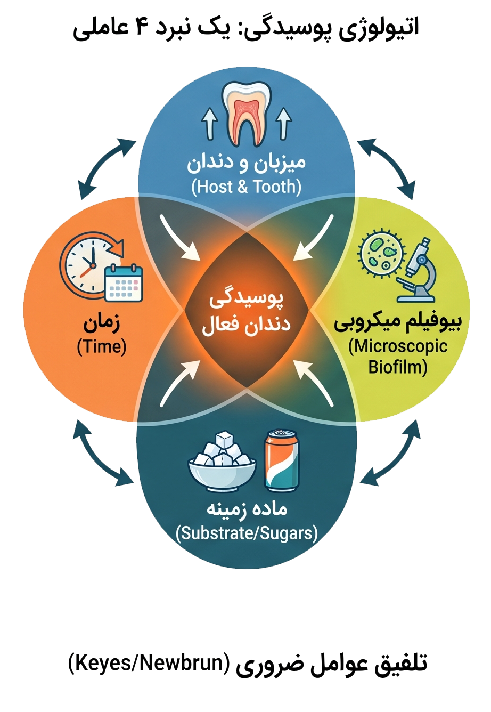
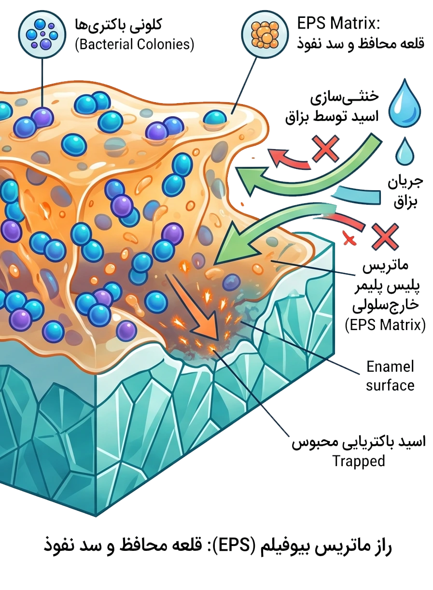
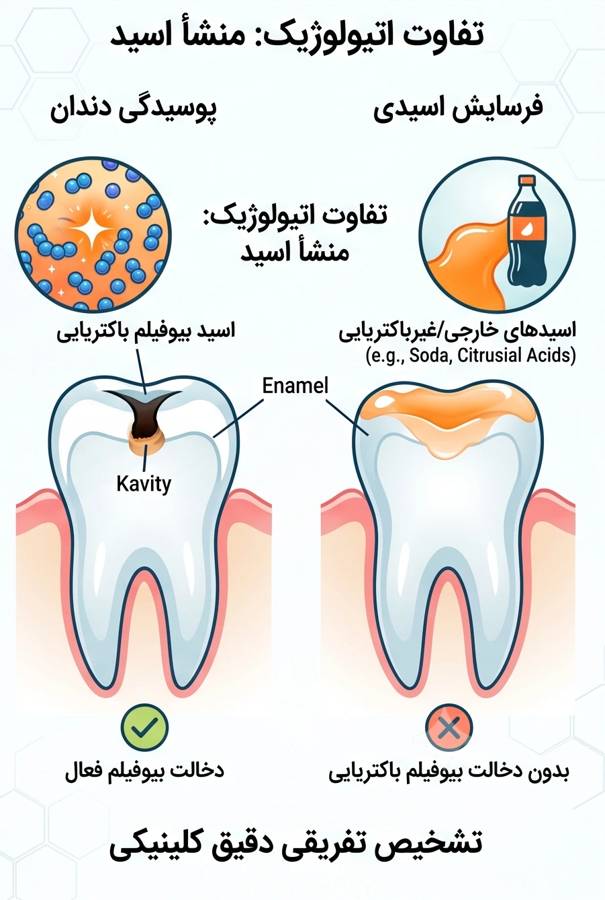

نسخه استخراجشده؛ ترجمه یا تأیید علمی انجام نشده است. وضعیت: captured
پوسیدگی دندان یک تخریب سادهی شیمیایی یا صرفاً یک عفونت باکتریایی نیست؛ بلکه یک بیماری چندعاملی (Multifactorial) و وابسته به بیوفیلم است.

میزبان و دندان (Host & Tooth): آناتومی شیارها، کیفیت مینا و میزان/قدرت بافری بزاق.
بیوفیلم میکروبی (Microscopic Biofilm): کلونی باکتریهای پوسیدهزا روی سطح دندان.
ماده زمینه (Substrate): کربوهیدراتهای قابل تخمیر (بهویژه ساکارز که پیشساز تولید اسید و ماتریس چسبنده است).
زمان (Time): فرکانس تکرار تماس اسید با دندان در طول روز.

چرا EPS مهم است؟ این ماتریس مثل یک قلعه محافظ عمل میکند؛ هم باکتریها را محکم به مینا میچسباند و هم مانع از شسته شدن اسید توسط بزاق میشود.

پوسیدگی (Caries): تخریب بافت سخت توسط اسید حاصل از بیوفیلم باکتریایی داخلی.
فرسایش اسیدی (Erosion): تخریب بافت سخت توسط اسیدهای خارجی یا غیرباکتریایی (مثل نوشابههای ورزشی/گازدار، مرکبات یا ریفلاکس معده) بدون دخالت بیوفیلم!